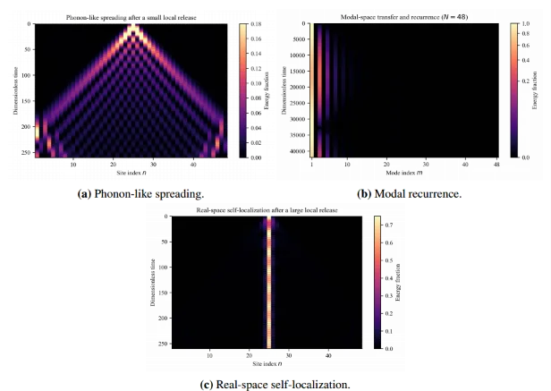
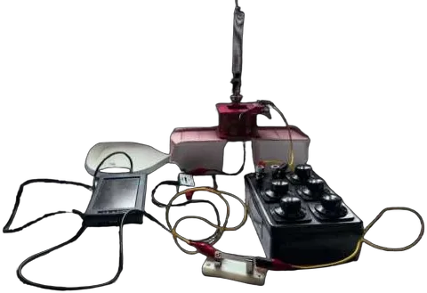
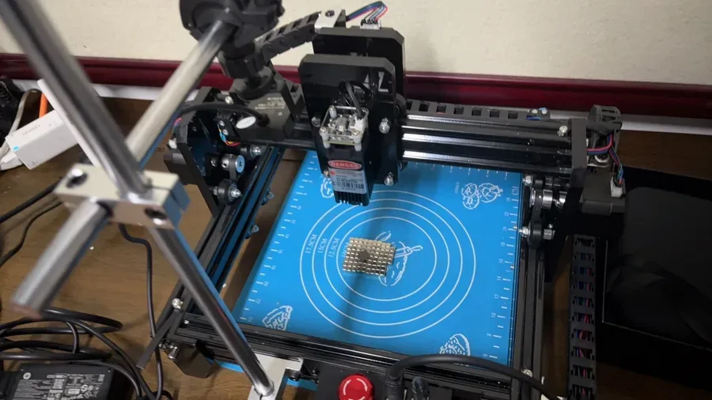

Coupledpendulums
A chain of magnetic pendulums is a desktop analogue of atoms in a crystal trading energy. I built the rig, filmed every trial and compared the measured normal modes with a Lagrangian model: they agreed to within about 1.4%.
01The question
How do magnet strength, spacing, length and release angle shift the chain's normal-mode frequencies, and how does that decide whether energy spreads through the chain, returns to a few modes, or stays trapped?
I designed and 3D-printed the apparatus: a rigid top rail, sliding PETG brackets, bearing-mounted arms and magnets in baskets. Each trial was filmed at 30 frames per second, tracked in Tracker, and the eigenfrequencies extracted by Fourier transform.

02What the model showed
The nearly in-phase mode stays controlled by gravity, while higher modes rise with magnetic moment and fall strongly with spacing. Larger release angles soften the frequencies.



03Electrical damping
A magnet on a spring oscillates inside a coil wired to a resistor. I modelled the flux and the mutual-inductance gradient, coupled the circuit to the motion, and predicted that damping peaks near 2,700 coil turns, falls as 1/R and grows with the square of the magnetic moment. My data followed all three trends.

04Levitation control
Pyrolytic graphite floats over a checkerboard of magnets. A laser heats one edge; graphite's susceptibility depends on temperature, so the force becomes uneven and the sheet should slide. I built field, temperature and motion models, bought and set up the laser, the gantry and the magnets, and found that my N52 magnets held the sheet too firmly for a 1.6 W beam. The model tells me what to change next.

05Leading the team
As captain I led our discussions: we took each problem apart into physics, model and experiment, argued over every assumption and rehearsed the opposition and review rounds together. At school I founded Wavefront, our physics lab and community, and tutor younger students for tournaments.